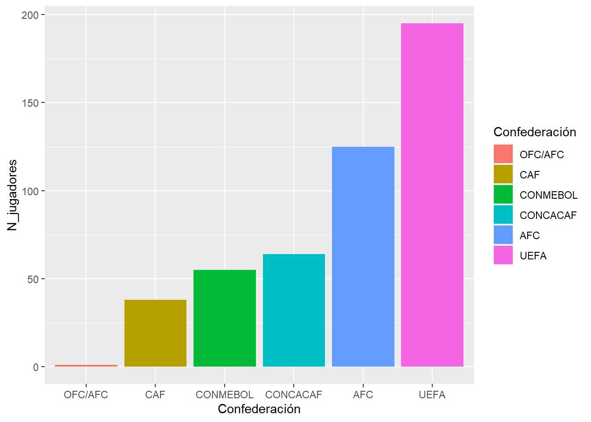
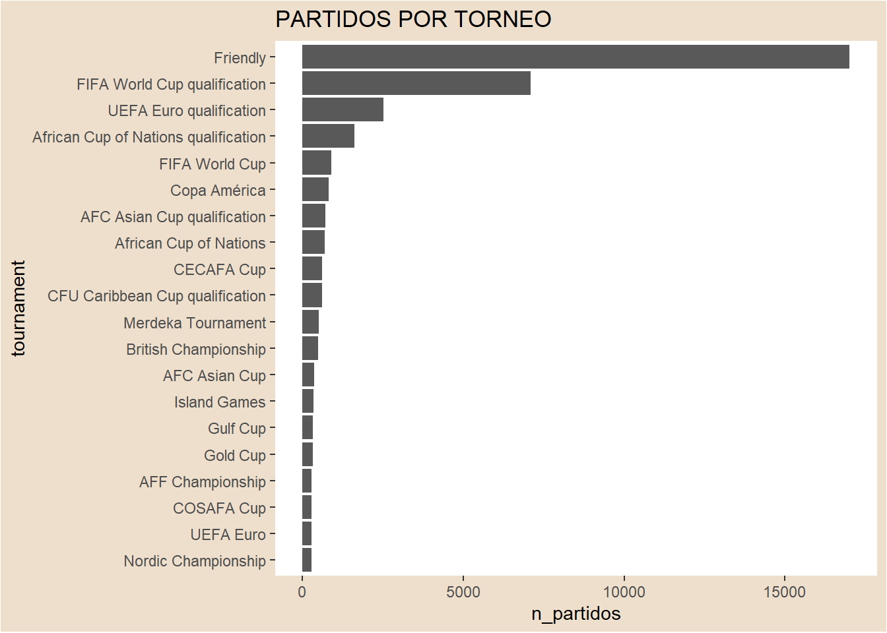
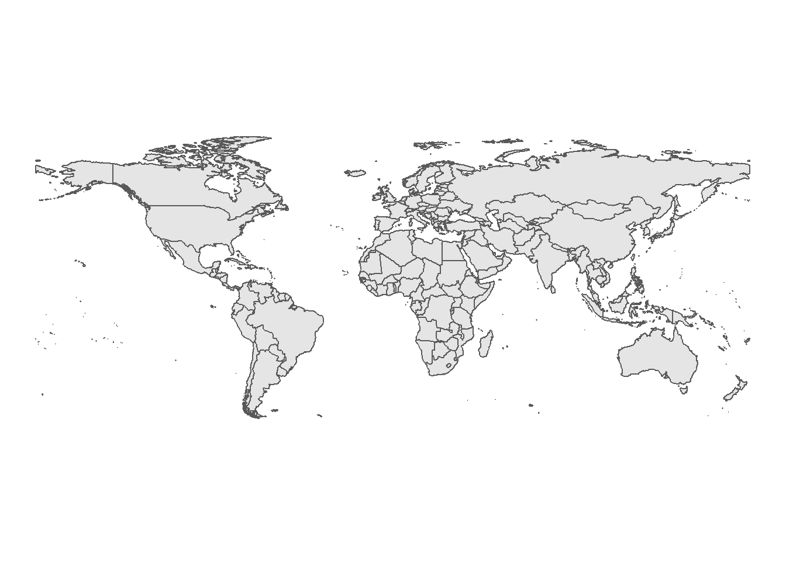
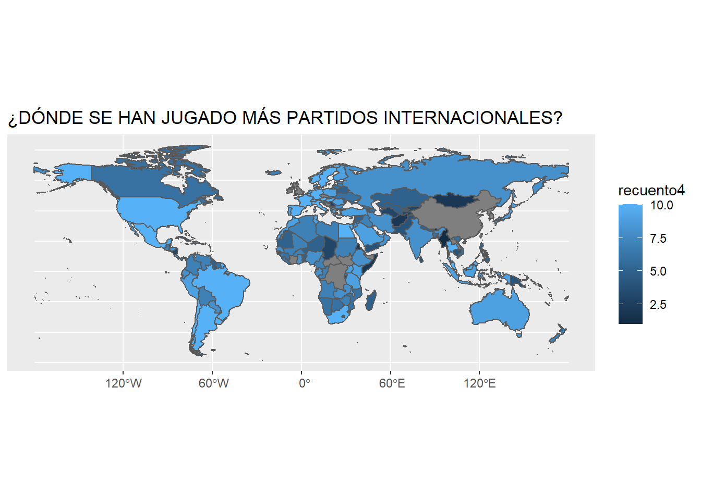

Análisis de los torneos,jugadores y partidos internacionales
Futbol
Autor
Carlos García (garpon@alumni.uv.es)
Fecha de Publicación
12 de enero de 2023
Introducción
En este trabajo procedere a analizar un poco por encima el futbol internacional, hablando sobre los jugadores con mas partidos internacionales, las confederaciones y los paises donde se realizan los partidos
El fútbol a lo largo de los años ha ido creciendo y evolucionando hasta llegar a ser el deporte más popular del mundo con unas 270 millones de personas al día involucradas.Con la realización de la primera reunión de la International Football Association Board en 1886 y la fundación de la FIFA en 1904, este deporte se ha expandido hasta llegar a todos los rincones del mundo. A partir de 1930 se comenzó a disputar la Copa Mundial de Fútbol, que se convirtio en el evento deportivo con mayor audiencia del mundo.
-En este gráfico se puede observar lo comentado anteriormente. Cabe destacar el descenso bastante pronunciado en 1939 debido a la Segunda Guerra Mundial. Además de la gran volatilidad que se da al final del gráfico.En este gráfico solo hay datos de los partidos realizados desde 1872 hasta 2019, por tanto no se puede observar la influencia que ha tenido el COVID sobre los partidos internacionales, pero podemos suponer que hubo un gran descenso en cuanto a partidos jugados debido a que las selecciones tenían que viajar a otros paises para jugar los partidos.
CONFEDERACIONES CON MÁS JUGADORES
Con los datos de la tabla de los jugadores con más partidos internacionales (lo conforman 478 jugadores) he realizado un gráfico mostrando a que confederacion pertenecen dichos jugadores. Como podemos observar el que más tiene es la UEFA(Union of European Football Associations), seguido de la AFC(Confederación Asiática de Fútbol) y de la CONCACAF(Confederación de Norteamérica, Centroamérica y el Caribe de Fútbol)

JUGADORES CON MÁS PARTIDOS
En estos gráficos podemos observar cuales son los jugadores con más participaciones en partidos internacionales,estos datos son de jugadores que han jugado más de 100 partidos con su respectiva selección.En primer lugar hay un empate entre Bader Al-Mutawa (Kuwait) y Cristiano Ronaldo(Portugal) con un total de 196 partidos.En el grafico que engloba todas las confederaciones podemos ver que dentro de los 15 jugadores con mas partidos se encuentra el español Sergio Ramos con 180 partidos. En los proximos dos graficos se pueden observar los jugadores europeos con más partidos y los jugadores con más partidos en la selección española(he puesto los que tienen mas 100 partidos con la selección). En el segundo gráfico podemos analizar los jugadores UEFA con mas internacionalizaciones. De los cuales 5 de 15 han ganado como mínimo un mundial.
Lilian Thuram(1 mundial:1998) con 142 partidos
Lothar Matthaus(1 mundial:1990) con 150 partidos
Iker Casillas(1 mundial:2010) con 167 partidos
Gianluigi Buffon(1 mundial:) con 176 partidos
Sergio Ramos(1 mundial:2010) con 180 partidos
En el último gráfico podemos observar los jugadores que más partidos han jugado con España,donde la gran mayoria de ellos jugaron o fueron seleccionados para el mundial de Sudafrica del 2010 en el que España salió campeona del mundo.De los 13 jugadores que hay en el grafico solo 2 no jugaron dicho mundial.
PARTIDOS POR COMPETICIÓN
Ahora analizaremos los tipos de torneo y cuantos partidos se han jugado en cada torneo. En este gráfico solo se he cogido los 20 torneos que tienen más partidos a lo largo de su historia, pero hay más de 100 tipos de torneos contando amistosos y partidos clasificatorios. Como se puede observa lo que más predomina son los partidos amistosos(con una diferencia abrumadora) y los partidos clasificatorios para las distintas competiciones, seguido de la World Cup que es uno de los eventos deportivos más vistos a nivel mundial.

MAPA
Para poder verlo de otra forma y tener otra visión sobre los partidos internacionales, he realizado un mapa donde podemos observar cuantos partidos se han jugado en cada país, sin clasificar por torneos, desde 1872 hasta 2017. Cabe resaltar que hay algunos paises que están en gris debido a que no los ha reconocido al unir las dos tablas, donde uno de ellos es Inglaterrra que estaría en el tercer puesto con más partidos. Como podemos observar donde más partidos se han jugado han sido en Latinoamerica, Estados Unidos y Europa, que es donde predomina el futbol, es decir, donde la gente le gusta verlo y jugarlo. Luego tambien hay paises donde tienen muchos partidos que esto podria ser debido a que tienen buenos estadios de futbol


#CONCLUSIÓN El fútbol se ha expandido y ha ido creciendo a lo largo de los años de forma desmesurada hasta el punto de ser el deporte mas visto a nivel internacional.
Correr el código
---title: "FUTBOL INTERNACIONAL"description: | Análisis de los torneos,jugadores y partidos internacionales author:- name: Carlos García (garpon@alumni.uv.es) #--date: 2023-01-12 #--categories: [Futbol] #--image: "./imagenes/futbol.jpg"title-block-banner: true #- {true, false, "green","#AA0000"}title-block-banner-color: "red" #-"#FFFFFF" toc: truetoc-location: lefttoc-depth: 3smooth-scroll: trueformat: html: #backgroundcolor: "#F1F3F4" #embed-resources: true link-external-newwindow: true #css: ./assets/my_css_file.css #- CUIDADO!!!!code-tools: truecode-link: true---# IntroducciónEn este trabajo procedere a analizar un poco por encima el futbol internacional, hablando sobre los jugadores con mas partidos internacionales, las confederaciones y los paises donde se realizan los partidos------------------------------------------------------------------------# Datos del trabajo::: panel-tabset## Datos usadosLos datos del trabajo provienen de Kaggle## Código```{r echo = TRUE}library(rio)library(tidyverse)library(forcats)library (ggthemes)library(ggThemeAssist)library(janitor)library(dplyr)library(plotly)library(gganimate)library(ggThemeAssist)library(rnaturalearth)library(rnaturalearthdata)library(gapminder)library(viridis)library(highcharter)library(treemapify)library(treemap)resultados <- rio::import("./datos/results.csv")jugadores <- rio::import("./datos/Libro1.xlsx")```:::------------------------------------------------------------------------# PARTIDOS POR AÑOEl fútbol a lo largo de los años ha ido creciendo y evolucionando hasta llegar a ser el deporte más popular del mundo con unas 270 millones de personas al día involucradas.Con la realización de la primera reunión de la International Football Association Board en 1886 y la fundación de la FIFA en 1904, este deporte se ha expandido hasta llegar a todos los rincones del mundo. A partir de 1930 se comenzó a disputar la Copa Mundial de Fútbol, que se convirtio en el evento deportivo con mayor audiencia del mundo. -En este gráfico se puede observar lo comentado anteriormente. Cabe destacar el descenso bastante pronunciado en 1939 debido a la Segunda Guerra Mundial. Además de la gran volatilidad que se da al final del gráfico.En este gráfico solo hay datos de los partidos realizados desde 1872 hasta 2019, por tanto no se puede observar la influencia que ha tenido el COVID sobre los partidos internacionales, pero podemos suponer que hubo un gran descenso en cuanto a partidos jugados debido a que las selecciones tenían que viajar a otros paises para jugar los partidos.```{r}#| echo: falselibrary(rio)library(tidyverse)library(forcats)library (ggthemes)library(ggThemeAssist)library(janitor)library(dplyr)library(plotly)library(gganimate)library(ggThemeAssist)library(rnaturalearth)library(rnaturalearthdata)library(gapminder)library(viridis)library(highcharter)library(treemapify)library(treemap)resultados <- rio::import("./datos/results.csv")jugadores <- rio::import("./datos/Libro1.xlsx")#GRAFICO 1 PARTIDOS POR AÑO 1872-2017tabla1 <- resultados %>%separate(date, c("fecha", "sobras"), sep ="-")%>%select(fecha,home_team,away_team)%>%group_by(fecha)%>%summarise(recuento =n())p1<-hchart(tabla1, "line", hcaes(x =fecha, y = recuento)) %>%hc_add_theme(hc_theme_google())p1```# CONFEDERACIONES CON MÁS JUGADORESCon los datos de la tabla de los jugadores con más partidos internacionales (lo conforman 478 jugadores) he realizado un gráfico mostrando a que confederacion pertenecen dichos jugadores. Como podemos observar el que más tiene es la UEFA(Union of European Football Associations), seguido de la AFC(Confederación Asiática de Fútbol) y de la CONCACAF(Confederación de Norteamérica, Centroamérica y el Caribe de Fútbol)```{r}#| echo: falselibrary(rio)library(tidyverse)library(forcats)library (ggthemes)library(ggThemeAssist)library(janitor)library(dplyr)library(plotly)library(gganimate)library(ggThemeAssist)library(rnaturalearth)library(rnaturalearthdata)library(gapminder)library(viridis)library(highcharter)library(treemapify)library(treemap)resultados <- rio::import("./datos/results.csv")jugadores <- rio::import("./datos/Libro1.xlsx")#g2 JUGADORES CON MAS PARTIDOS SEGUN LA CONFEDERACIONtabla2 <- jugadores %>%select(Confederación,Nombre)%>%group_by(Confederación)%>%summarise(N_jugadores =n())%>%arrange(desc(N_jugadores))%>%mutate(Confederación=fct_reorder(Confederación,N_jugadores))p2<-tabla2%>%ggplot(aes(x=N_jugadores,y=Confederación,fill=Confederación))+geom_col()p2+coord_flip()```# JUGADORES CON MÁS PARTIDOSEn estos gráficos podemos observar cuales son los jugadores con más participaciones en partidos internacionales,estos datos son de jugadores que han jugado más de 100 partidos con su respectiva selección.En primer lugar hay un empate entre Bader Al-Mutawa (Kuwait) y Cristiano Ronaldo(Portugal) con un total de 196 partidos.En el grafico que engloba todas las confederaciones podemos ver que dentro de los 15 jugadores con mas partidos se encuentra el español Sergio Ramos con 180 partidos. En los proximos dos graficos se pueden observar los jugadores europeos con más partidos y los jugadores con más partidos en la selección española(he puesto los que tienen mas 100 partidos con la selección). En el segundo gráfico podemos analizar los jugadores UEFA con mas internacionalizaciones. De los cuales 5 de 15 han ganado como mínimo un mundial. Lilian Thuram(1 mundial:1998) con 142 partidos Lothar Matthaus(1 mundial:1990) con 150 partidos Iker Casillas(1 mundial:2010) con 167 partidos Gianluigi Buffon(1 mundial:) con 176 partidos Sergio Ramos(1 mundial:2010) con 180 partidos En el último gráfico podemos observar los jugadores que más partidos han jugado con España,donde la gran mayoria de ellos jugaron o fueron seleccionados para el mundial de Sudafrica del 2010 en el que España salió campeona del mundo.De los 13 jugadores que hay en el grafico solo 2 no jugaron dicho mundial.```{r}#| echo: falselibrary(rio)library(tidyverse)library(forcats)library (ggthemes)library(ggThemeAssist)library(janitor)library(dplyr)library(plotly)library(gganimate)library(ggThemeAssist)library(rnaturalearth)library(rnaturalearthdata)library(gapminder)library(viridis)library(highcharter)library(treemapify)library(treemap)resultados <- rio::import("./datos/results.csv")jugadores <- rio::import("./datos/Libro1.xlsx")#GRAFICO 5 JUGADORES CON MAS PARTIDOStabla5<-jugadores%>%slice(c(1:15))p5<-hchart(tabla5, "pie", hcaes(x =Nombre, y =Partidos )) %>%hc_colorAxis(stops =color_stops(colors= viridis::turbo(10)))p5#GRAFICO 4 JUGADORES UEFA CON MAS PARTIDOStabla4<-jugadores%>%filter(Confederación=="UEFA")%>%slice(c(1:15))p4<-hchart(tabla4, "pie", hcaes(x =Nombre, y =Partidos )) %>%hc_colorAxis(stops =color_stops(colors= viridis::turbo(10)))p4 #p4+labs(title = "JUGADORES UEFA CON MÁS PARTIDOS")# GRAFICO 3 JUGADORES ESPAÑOLES CON MAS PARTIDOStabla3 <- jugadores%>%slice(c(6,16,66,84,98,118,134,233,280,281,394,402,461))%>%arrange(desc(Partidos))p3<-hchart(tabla3, "pie", hcaes(x =Nombre, y =Partidos )) %>%hc_colorAxis(stops =color_stops(colors = viridis::turbo(10)))p3```# PARTIDOS POR COMPETICIÓNAhora analizaremos los tipos de torneo y cuantos partidos se han jugado en cada torneo. En este gráfico solo se he cogido los 20 torneos que tienen más partidos a lo largo de su historia, pero hay más de 100 tipos de torneos contando amistosos y partidos clasificatorios. Como se puede observa lo que más predomina son los partidos amistosos(con una diferencia abrumadora) y los partidos clasificatorios para las distintas competiciones, seguido de la World Cup que es uno de los eventos deportivos más vistos a nivel mundial.```{r}#| echo: falselibrary(rio)library(tidyverse)library(forcats)library (ggthemes)library(ggThemeAssist)library(janitor)library(dplyr)library(plotly)library(gganimate)library(ggThemeAssist)library(rnaturalearth)library(rnaturalearthdata)library(gapminder)library(viridis)library(highcharter)library(treemapify)library(treemap)resultados <- rio::import("./datos/results.csv")jugadores <- rio::import("./datos/Libro1.xlsx")#PARTIDOS POR TORNEO G6tabla6<-resultados%>%select(date,tournament)%>%group_by(tournament)%>%summarise(n_partidos =n())%>%arrange(desc(n_partidos))%>%slice(c(1:20))%>%mutate(tournament=fct_reorder(tournament,n_partidos))p6<-tabla6%>%ggplot(aes(x=n_partidos,y=tournament))+geom_col()p6 +theme(panel.background =element_rect(fill ="white"),plot.background =element_rect(fill ="antiquewhite2")) +labs(title ="PARTIDOS POR TORNEO")```# MAPAPara poder verlo de otra forma y tener otra visión sobre los partidos internacionales, he realizado un mapa donde podemos observar cuantos partidos se han jugado en cada país, sin clasificar por torneos, desde 1872 hasta 2017. Cabe resaltar que hay algunos paises que están en gris debido a que no los ha reconocido al unir las dos tablas, donde uno de ellos es Inglaterrra que estaría en el tercer puesto con más partidos. <br>Como podemos observar donde más partidos se han jugado han sido en Latinoamerica, Estados Unidos y Europa, que es donde predomina el futbol, es decir, donde la gente le gusta verlo y jugarlo. Luego tambien hay paises donde tienen muchos partidos que esto podria ser debido a que tienen buenos estadios de futbol```{r}#| echo: falselibrary(rio)library(tidyverse)library(forcats)library (ggthemes)library(ggThemeAssist)library(janitor)library(dplyr)library(plotly)library(gganimate)library(ggThemeAssist)library(rnaturalearth)library(rnaturalearthdata)library(gapminder)library(viridis)library(highcharter)library(treemapify)library(treemap)resultados <- rio::import("./datos/results.csv")jugadores <- rio::import("./datos/Libro1.xlsx")#GRAFICO 7 MAPAtabla7<-resultados%>%group_by(country)%>%summarise(recuento =n())%>%mutate(recuento4 =ntile(recuento, 10))world <- rnaturalearth::ne_countries(scale ="medium", returnclass ="sf")#- quito Antarctica y Groenlandiaworld <- world %>%filter(subregion !="Antarctica") %>%filter(admin !="Greenland")ggplot() +geom_sf(data = world) +theme_void()world <- world %>%select(name, iso_a3, geometry)df_world <-left_join(world, tabla7, by =c("name"="country") )p7 <-ggplot(df_world) +geom_sf(aes(geometry = geometry, fill =recuento4))p7+labs(title ="¿DÓNDE SE HAN JUGADO MÁS PARTIDOS INTERNACIONALES?")```#CONCLUSIÓNEl fútbol se ha expandido y ha ido creciendo a lo largo de los años de forma desmesurada hasta el punto de ser el deporte mas visto a nivel internacional.